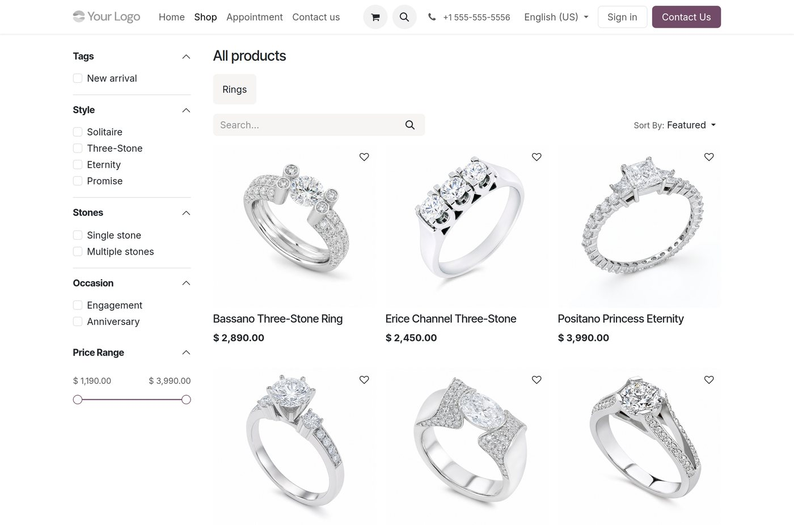
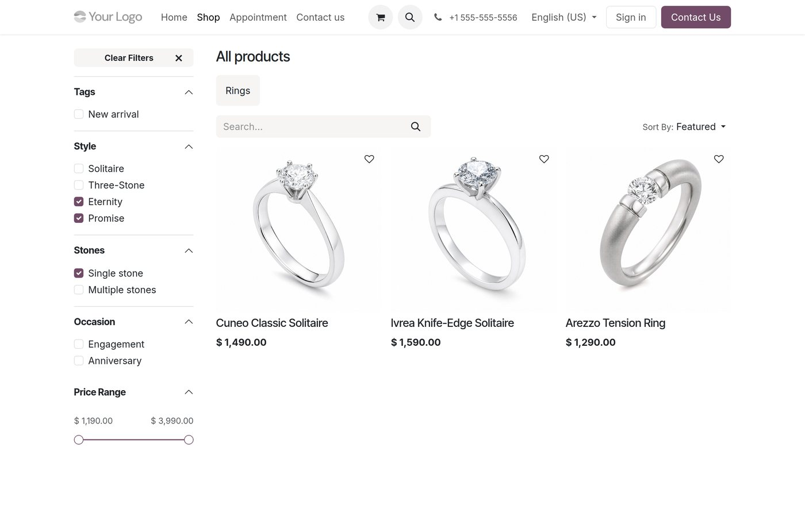
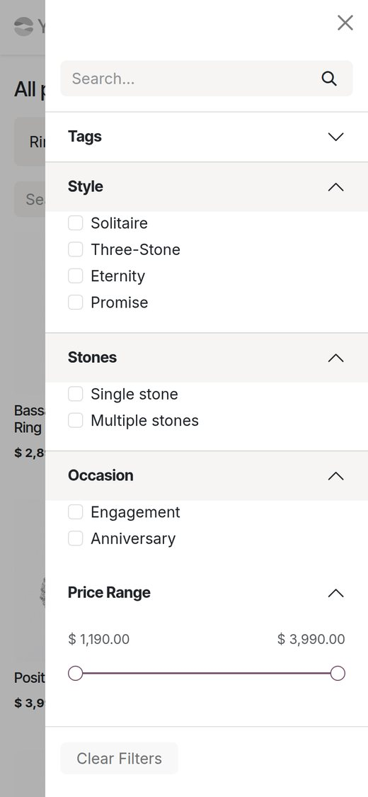
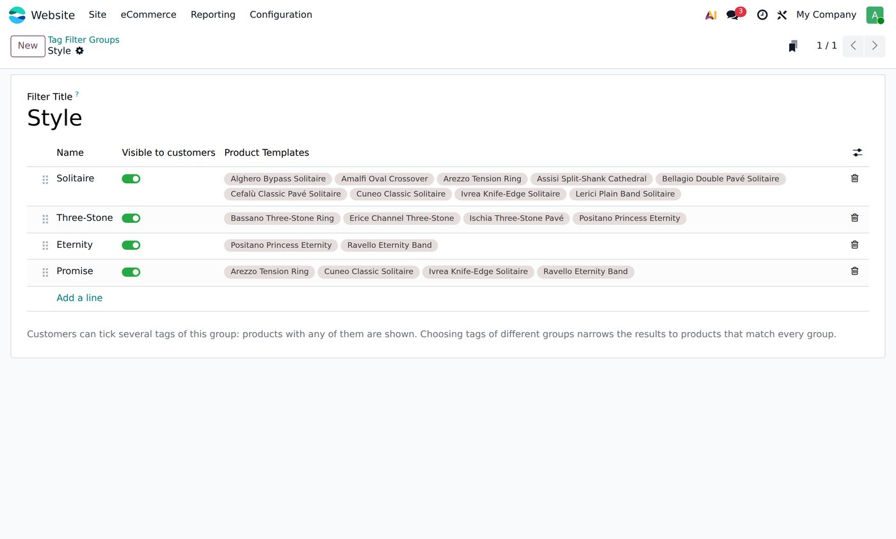
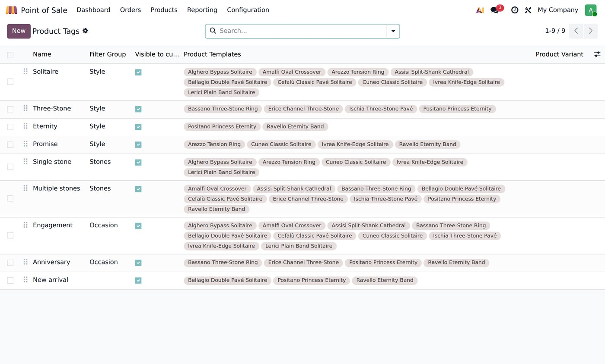

Odoo can filter the shop by product tags, but every tag ends up in a single block and ticking two of them always shows products that have either one. This module lets you sort your tags into groups, each with its own title in the filters, and combines them the way customers expect.
Each group gets its own title in the shop sidebar, next to your attribute filters and the price range. Tags you leave without a group stay under the standard “Tags” title.

Just like attribute filters. Below, the customer ticked Eternity and Promise (same group: either one) and Single stone (another group: must match too). Standard Odoo would have listed every ring carrying any of the three tags.

|
 |
Phones and the “Filters” panel tooThe same groups appear in the side panel used on mobile and by the “filters on top” shop layout. A group opens by itself when one of its tags is selected. Several tags per productA ring can be Eternity and Promise. Tags never create variants, never ask the customer to choose anything, and never show up as an extra question in the cart or at the Point of Sale — unlike attributes with several values. |
Website ▸ eCommerce ▸ Products ▸ Tag Filter Groups: create a group, add its tags right there, and order groups and tags by dragging. The product tag list gets a Filter Group column so you can sort the tags you already have in one go.


website_sale.Questions or a custom need? soporte@xubax.com